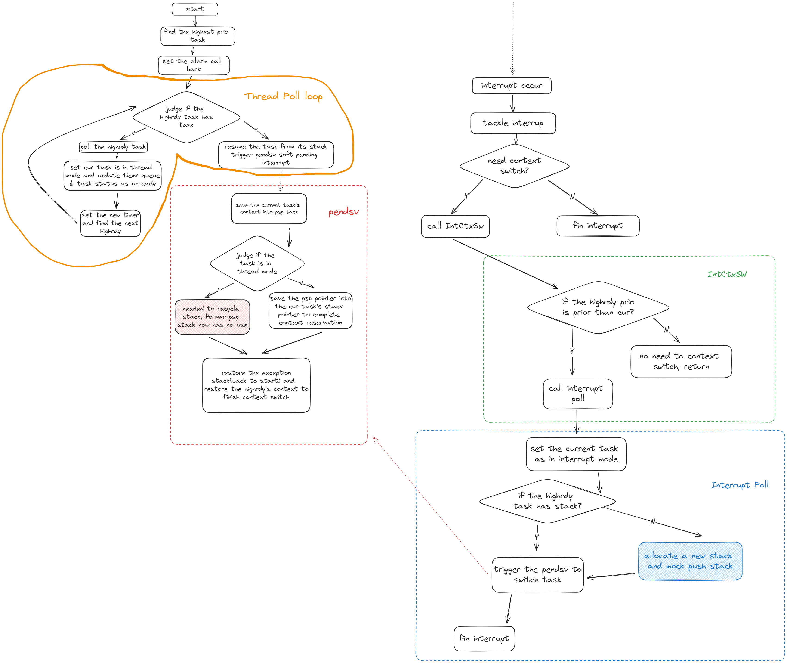

技术报告
摘要
embassy_preempt是一个嵌入式异步实时操作系统的调度模块。它通过Rust提供的协程机制，结合embassy的异步执行器的实现方式，并借鉴传统嵌入式实时操作系统uCOSII的任务切换机制，在任务调度时，若当前任务主动让权，则会进行栈复用；若当前任务被抢占，则会进行栈分配，并进行现场的保存，使得embassy_preempt同时具有了embassy低内存开销的优势以及uCOSII高实时性的特点。
项目背景
在通常情况下，如uCOSII的嵌入式操作系统基本都以线程（或任务）为基本单位进行调度，这就使得每一个任务都将占有一个私有的栈空间。而在实际的应用中，在任务调度的过程中，大部分任务释放CPU都是由于主动让权，而非被高优先级的任务抢占，这使得栈空间存在一定的浪费。
而在embassy中，通过引入Rust的协程机制，使得栈空间的利用率得到了极大的提升。但是由于embassy的线程执行器中的协程之间无法进行抢占，并且进行协程调度时并没有优先级裁决机制，在多任务的情景下将导致若干个任务出现未被及时唤醒的情况，导致实时性较差，这是一个嵌入式实时操作系统无法接受的。
我们希望在已有的嵌入式实时操作系统的高实时性以及embassy的协程机制之间进行“折衷”，编写一个既可以满足实时应用环境下的实时性要求，又可以尽可能缩小内存使用的嵌入式异步实时操作系统调度模块——embassy_preempt。
实现方案
执行器部分
执行器分成两个环节：thread模式下没有任务抢占的循环POLL环节和interrupt模式下发生任务抢占的interrupt POLL环节
-
thread的循环poll思路：
函数会直接从执行器里面取出highrdy任务调度执行，所以需要保证调用thread poll的时候是已经确定好了最高优先级的任务的，然后循环里面先poll任务执行，任务poll完后，一定是遇到pending或者任务完成退出，由于我们内置了时钟，这里就需要进行时钟的更新设置，然后就设置任务为非就绪等待后续的waker环节。最后找到新的最高优先级，继续循环
-
interrupt poll的思路：
中断POLL函数会进行抢占式的任务调度，在这里个函数里面主体会进行最高优先级是否有栈的检验，对于没有栈的最高优先级任务，它的调度执行我们会进行模拟压栈，让其变成一个有栈的任务，从而做到栈的分配（因为原有的栈在抢占调度的情况下会分配给当前执行任务用于上下文保存，那么新的任务执行一定需要额外的栈，要么是新任务本身就自带了，不然就需要额外分配一个）。然后我们会开始同一个的任务切换操作，这个操作被放置在pendsv可悬挂软中断里面，这是因为需要及时满足其它中断的需求，最后结束其它中断处理后才进行统一的任务切换处理。
这里说明一下，interrupt poll实际上只被我们暴露给用户的外部接口IntCtxSW调用，这个接口只是在调用interrupt poll之前进行了优先级判断，检查是否需要进行任务切换，如果需要就会调用interrupt poll
核心环节是栈的分配和回收
-
栈的分配过程是在中断过程中发生的（也就是抢占式调度），在发生中断并且需要抢占的时候，先设置当前任务状态是interrupt状态，表明当前任务被抢占，然后判断最高优先级任务（即将切换到的任务）是否有栈：
- 对于没有栈的待切换任务，就需要先进行栈分配并“模拟压栈”：即将此分配的栈模拟为一个被中断抢占的有栈任务的栈，那么里面就会保存有中断的pc指针以及其它寄存器信息，这里我们主要是设置pc指针为执行器POLL函数指针从而让没有栈的任务能够通过poll执行。
- 而对于有栈的待切换任务，这里不需要做处理，后续的操作都会认为任务是有栈的
然后在实际任务切换环节，采用悬挂的pendsv软中断形式进行，避免重复无效任务切换，保证处理完紧急中断之后才进行任务切换。
-
栈的回收是在pendsv中断里面完成的，正好是顺着往下描述，
进入pendsv的时候就需要把现场进行保护，保存任务的上下文到psp栈
- 对于当前任务是thread模式的情况，如果进入pendsv中断，那么就说明是在恢复一个有栈的任务，并且当前任务是正常await让权出来的，那么就需要drop掉当前协程任务共用的程序栈，转而使用恢复了栈的任务的栈，也就是说在恢复有栈任务执行的时候，将其变成无栈协程执行，并且回收掉之前（当前任务）使用的程序栈（这个时候就不存在任务上下文的保存）。
- 而对于当前任务是interrupt模式的情况，说明进入pendsv中断是由于任务抢占导致的，那么需要将当前的程序栈从协程任务共享的栈变成当前interrupt私有的栈，然后将程序栈换成待调度的最高优先级的任务的栈（最高优先级任务一定有栈，触发pendsv之前保证了这一点（模拟压栈）），这样就存在现场的保存需求，需要将任务的psp栈保存到任务tcb的栈指针上。然后同样的也是恢复最高优先级任务执行。
思维流程图：

创新点
可抢占的内核
可以中断正在运行的任务，切换到另一个任务执行。嵌入式系统里通常是由于中断触发任务的调度，用户可以在实现中断驱动后，使用IntCtxSW调用操作系统的抢占调度操作
栈复用
充分利用rust的协程机制，在非抢占的情况下，所有任务共同使用一个栈区，没有任务私有栈。当发生抢占调度时，分配给被抢占任务栈用于现场保护，并且能在恢复任务继续执行时合理回收不使用的栈，使得空间的利用率得到了一定程度上的提升。此外，栈的分配为了实时性和通用性采用了block allocation和linked-list allocation 算法结合的方式
兼容性（Taskcreate、OSTimeDly）
主要是在和原来ucosii的c接口上进行兼容，通过FFI实现任务创建函数和delay函数与原来一致的接口
time_queue与时钟的优化
为了保证调度的高效实时，timer_queue做成了超时时间的排序链表，并且时钟设置采用单TIM单Channel上升沿触发超时完成所有任务的超时设置，能更准确高效的保证实时性。此外，我们还考虑到了等待时间极短的情况。我们通过循环设置alarm的方式保证在等待时间极短的情况下alarm一定会被设置为下一个超时时间。
难点
模拟压栈与内存对齐
模拟压栈的问题在于传入的栈指针很可能不是我们想要的8字节对齐的（肯定是4字节对齐），所以我们会把栈指针给先向上加4字节再截取8字节对齐，从而向上8字节对齐，但是由于传入的栈指针是满堆栈的初始指针，默认是当前元素是已有内容的，压栈的时候需要先栈指针下移，然后再压入栈，所以最后的栈指针的指向一定是偏移17个4字节（因为保存了17个寄存器的内容）。
临界区与任务边界
只在对于竞争资源（主要是全局变量）的访问修改处进行了临界区设置，保证了可抢占性，并且操作系统启动之后，执行到任何时刻的代码都会对应着一个任务的执行，在执行器的poll和interrup poll中，也都会属于到当前任务的代码，不存在没有任务对应的代码，保证了抢占时的上下文有明确的任务tcb保存
如何统一异步任务与同步任务？
统一异步任务与同步任务，从本质上来看是统一二者的TCB；而在TCB中，一个同步任务与一个异步任务的之间有两个区别：
- 任务函数的保存方式：同步任务通常是直接保存函数指针，而一个异步任务则是保存任务异步函数对应的future。
- 栈的分配：同步任务通常在初始化的时候就占有了一个栈，而一个异步任务只有在被抢占时才会得到一个栈。
为了充分发挥Rust异步的空间优势，我们只能尝试将一个同步任务函数转换为一个异步的future，并且尝试将同步任务的栈分配模式与异步任务的栈分配模式统一。因此对异步任务而言，我们可以直接借鉴embassy的做法，不需要做任何改变；而对同步任务而言，如果要把同步任务也转换为一个future，我们就需要解决以下问题：
- 我们应该如何根据一个同步任务函数指针（或闭包）创建出一个对应的future？
- 栈分配模式如何统一？
首先，对第一个问题，从逻辑上来看，对一个同步任务而言，他并没有一个主动让权的await点，那么同步任务实际上与一个没有await点的异步任务无异。因此如果将这个逻辑应用在我们的系统中，那么我们就只需要为同步任务函数套上一层async函数闭包，那么我们就将得到一个没有await点、代表着同步函数的future，而这样的闭包由于rust的特性，是直接创建在代码区的，而不会去占用内存空间。
对于第二个问题，我们首先要知道“任务栈”在一个操作系统中的作用是什么。在一个OS中，一个任务栈主要有两个：
- 保存一个任务执行过程中的函数调用
- 当一个任务被抢占时进行任务现场保存，以便后续进行现场恢复
此外，一个线程与一个协程最大的区别就是，一个协程是无栈的，而线程是有栈的。因此我们可以简单地通过一个任务是否有一个私有栈来判断一个任务是线程状态还是协程状态。
我们还需要在这里明确“抢占”与“让权”的意义是什么。在我们的系统中，除了异步任务通过await点主动让权将CPU交给内核进行调度外，其余的的任务切换方式都认为是抢占的。
因此，一个任务其实仅仅需要在他被抢占的时候，将当前使用的栈变为他的私有栈，并用于上下文保存即可。所以如果我们成功将一个同步函数转换为一个future，并且在同步任务创建时将其自带的栈回收并且统一由堆分配器进行任务栈分配，那么同步任务与异步任务的栈分配模式就可以统一了：
- 抢占模式：需要将当前的栈（需要将当前栈作为私有栈是由于当前栈上保存了任务中的函数调用）作为当前任务的私有栈并且进行上下文保存。
- 让权模式：一个任务通过await点进行任务切换时，将不会进行栈切换，而是所有处于协程状态的任务共用一个栈，而每一个线程状态的任务都拥有自己的私有栈。
除此以外，我们将对原来idle的处理也改为了协程模式，idle任务是不会拥有栈执行的，在遇到idle任务被抢占的时候，会将idle任务使用的协程栈转让给抢占的将执行的无栈协程任务，用于模拟压栈，而idle的上下文是不会被保留的，这一点和普通的任务被抢占是不一样的，从而优化的任务抢占的情况，并且也减少了栈的开销。
因此，经过我们处理的同步任务由于没有await点，就不会存在让权切换的模式。因此同步任务将在创建时通过栈回收从线程模式转换为协程模式，然后在其第一次被抢占时拥有它的私有栈，并且从协程模式转换为线程模式，并且由于同步任务不存在让权，其将一直处于线程模式。而这一套同步任务的任务切换方式与异步任务的切换方式是兼容的。在这种模式下，任务在运行的过程中将不一定从始至终都以线程或者协程的方式存在，而是在不断进行状态的转换。至此我们就将同步任务与异步任务统一起来了。
最后我们的测试结果表明（详见后面的测试结果）：
-
在纯线程模式下，即所有任务都是同步任务时，在执行的前期，会为每个任务依次分配栈，使任务一直处于线程模式。在情况下，切换的响应速度和ucosii这种强实时的多线程RTOS的速度是很接近的（调度时间相差0.5us左右，CPU主频84Mhz，大致相差50条汇编指令），所以我们兼容的情况表现是良好的。
-
在引入协程的测试里面，由于协程的唤醒的poll机制，导致了额外的代码执行开销，所以会多消耗3-4us用于这部分代码执行，我们仔细的查看了时间开销的情况，确定了几个额外的开销原因：
- 栈分配：这里的栈分配指的是我们已经优化了任务抢占idle的情况的。在有协程存在的情况下，当一个处于协程状态的任务抢占了另一个非idle的任务，栈分配是不可避免的。
- 模拟压栈：由于每次分配栈以及进行栈转移（即协程任务抢占idle之后，将idle栈转移给该任务）之后都需要进行模拟压栈以便后续PendSV进行现场恢复。
- poll执行：poll函数的执行为协程任务唤醒的必备流程，是无法优化的
目前来看无法进一步优化这里（即在协程模式下）的额外开销，因为这的确是协程机制所带来的额外且必需的负担。但是得到的内存开销的收益是极好的（相同情况下，至少减少了50%的栈开销）
通过这种方式，我们将同步任务和异步任务统一起来，但是我们几乎没有破坏线程、协程本身的优良特性，即在我们的系统中，线程可以保持原有的高实时性的特点，而协程可以保持原有的低内存开销、高并发的特点。
aapcs与FFI
首先介绍一下aapcs（Procedure Call Standard for the ARM Architecture，ARM过程调用标准）。在ARM架构的CPU（或MCU）中，当一个函数调用一个子函数时，若子函数需要接收四个及以下的参数，那么就将通过R0-R3进行传递；若子函数需要接收四个以上的参数，则多余的参数将通过堆栈进行传递。而在子函数返回时，则对不同的返回值类型有不同的处理，在这里我们仅仅说明我们所遇到的情况：当子函数的返回值为32位以上的非基本数据类型时，返回值本身将被存储在堆栈上，并且在函数返回时将把返回值的地址存储在R0中，R1将存储NCRN的值（Next Core Register Number，NCRN)。当子函数的返回值小于32位时，返回值将直接被存储在R0寄存器中。
需要注意的是，在子函数返回值为32位以上的非基本数据类型时，R0中存储的返回值地址应该由主调函数决定，因此在进行传参时，R0就将被赋为一个主调函数决定的地址，而函数参数将通过R1-R3寄存器以及堆栈进行传递。
在我们最初暴露出的FFI接口OSTaskCreate中，其需要接收四个参数并且返回值为一个八字节对齐的枚举类型OS_ERR_STATE。在运行过程中出现以下情况：
- rustc编译器将把R0保留用以记录返回值地址，并且将函数参数传递至R1-R3寄存器以及堆栈。即rustc编译器完全符合aapcs规范。
- gcc编译器将直接把函数的四个参数保存至R0-R3寄存器，并不会预留R0用于保存返回值的地址。即gcc编译器貌似并没有按照正规的aapcs规范进行处理
由于C与Rust二者的编译器对函数传参处理的不同，自然就导致了FFI接口无法正常运行。但是由于这是C与Rust二者的编译器的兼容性出现了问题，所以我们无法直接解决这个问题，只能另辟蹊径。
我们发现在四字节返回值的情况下，C与Rust编译器的表项如下：
- rustc编译器由于返回值为非基本数据类型，并且位数小于32，就不会预留R0作为返回值地址。因此rustc编译器从R0-R3中获取函数的四个参数。
- gcc编译器无论是在返回值为四字节还是八字节的情况，都将把四个函数参数传递进R0-R3寄存器。这也恰好符合了返回值为四字节非基本数据类型的aapcs规范。
不难发现，在FFI接口返回值为四字节非基本数据类型时，C与Rust编译器的处理方式是兼容的。因此我们最终的解决方案为，将Rust提供的FFI接口的返回值设定为四字节对齐。
测试结果
功能测试
硬件驱动测试
在硬件驱动测试中，我们仅创建了一个任务，以便排除调度过程中出现的问题对排查硬件驱动问题的影响。
经过测试，按键驱动与Timer中断均可正常工作。
调度正确性测试
在调度正确性测试中，我们创建了若干个任务，并在代码的关键位置（如任务中、开始抢占调度时，正常调度时）检查就绪队列，并输出日志信息，并将所有的日志信息输出到文件中。通过对文件中的数据进行分析，我们发现代码的执行流符合我们的预期。
压力测试
在压力测试中，我们创建了30个任务，并将delay时长设置为1tick、10tick、100tick、10000tick与100000tick，以模拟各种应用场景下的调度（中断）频率。
对压力测试程序，我们持续运行了1h30min，并未出现异常。
性能测试
时间尺度
-
实时性
-
测试原理
在多任务环境下，实时性体现为：当最高优先级任务(对embassy而言为某一个特定的任务)需要等待的事件发生时，最高优先级任务可以及时被唤醒并被调度。因此我们将通过最高优先级任务中的实际delay的时长与设定的delay时长的误差来衡量测试对象的实时性。
我们将在delay函数开始前拉高PA0引脚的电平，并在delay函数结束后拉低PA0引脚的电平，则高电平持续时间即为实际delay的时长。
-
测试结果
测试对象
测试数据(ms)embassy_preempt ucosii embassy 数据1 50.17 49.574 107.212 数据2 50.12 49.452 85.775 数据3 50.13 49.287 107.212 数据4 50.12 49.528 85.774 数据5 50.07 49.055 85.776 数据6 50.09 49.566 85.768 数据7 50.12 49.905 107.214 数据8 5.013 49.453 107.212 数据9 50.11 49.383 107.218 数据10 50.12 49.046 85.774 数据11 50.12 49.399 85.773 数据12 50.11 49.833 107.212 数据13 50.17 49.185 85.774 数据14 50.13 49.046 85.773 平均值 50.12214 49.408 94.96193 误差 0.244% 1.184% 89.924% 注：delay时间为50ms，任务数量为6个
-
测试结论
由于embassy_preempt与ucosii具有抢占机制，因此二者的delay时间误差较小，实时性较高，基本符合嵌入式实时操作系统对实时性的要求。
而在embassy中由于没有优先级以及抢占机制，使得任务只能被逐个执行，导致某个特定的任务无法被及时执行，因此embassy的delay时间误差较大，实时性较低，无法符合嵌入式实时操作系统对实时性的要求。
-
-
调度复杂度
-
测试原理
调度复杂度体现为最高优先级任务等待的事件发生，至该任务开始执行所花费的时间（记为调度时间）。调度时间越长，则代表着调度算法以及调度过程越复杂。
我们将在唤醒任务的ISR开始时拉高PA1的电平，并在任务开始执行时拉低PA1的电平，则高电平时间即为调度时间。
-
测试结果
测试对象
测试数据ucosii embassy_preempt线程模式 embassy_preempt协程模式 embassy(ms) 数据1 7.00 7.375 10.125 67.361 数据2 7.042 7.375 10.167 91.294 数据3 7.00 7.375 10.167 105.108 数据4 7.042 8.333 10.125 93.332 数据5 7.00 8.333 10.167 47.646 数据6 7.00 7.375 10.083 80.193 数据7 7.042 7.375 10.083 69.887 数据8 7.00 8.333 10.167 105.108 数据9 7.00 7.375 10.125 72.472 数据10 7.00 8.333 10.167 47.897 数据11 7.042 7.375 10.167 68.355 数据12 7.00 7.375 10.167 119.003 数据13 7.00 8.333 10.083 47.897 数据14 7.00 7.375 10.125 103.280 数据15 7.042 7.375 10.083 80.472 平均值 7.014 7.6943 10.1334 79.954 注：任务数量为6个
-
测试结果分析
由于embassy无抢占机制，在测试调度时间时无法确定下一个执行的任务为我们指定的任务，因此通过我们的方式测量出的“调度时间”中将包含其他任务的执行时间以及重调度时间，从数据中也可以发现，每一次对embassy测试出的“调度时间”变化较大，因此对embassy测量的”调度时间”为无效数据。
-
解释8.333的问题（也是分析线程模式和ucosii时间差距的关键），是因为当当前是idle任务时，如果发生抢占，我们不希望idle任务保存上下文，所以如果切换到的任务有栈，那么就会将原来的程序栈释放掉，设置新的程序栈为有栈的任务的栈，从而回收栈，所以这就导致了回收栈的额外开销（≈1us—对应84条指令的样子），经过测试，在任务执行频率很高的情况下，或者协程任务比较多的情况下，这种情况就几乎不会发生，所以embassy_preempt协程模式的数据区别不是很大
-
而协程模式之所以会多2.5us的样子，是因为几个地方的开销：
- 栈分配：这里的栈分配指的是我们已经优化了任务抢占idle的情况的。在有协程存在的情况下，当一个处于协程状态的任务抢占了另一个非idle的任务，栈分配是不可避免的。
- 模拟压栈：由于每次分配栈以及进行栈转移（即协程任务抢占idle之后，将idle栈转移给该任务）之后都需要进行模拟压栈以便后续PendSV进行现场恢复。
- poll执行：poll函数的执行为协程任务唤醒的必备流程，是无法优化的
-
测试结论
ucosii的调度时间短于embassy_preempt，说明ucosii的调度过程优于embassy_preempt。但由于二者的调度时间差距为微秒级，这在实际应用场景中几乎可以忽略不计。因此可以认为ucosii与embassy_preempt的调度复杂度相近。
-
空间尺度
- 静态空间
-
测试原理
在RAM区的大小为96K的情况下，创建64个任务，并采取统一的优化等级（Rust优化设置为1，C优化设置为3），查看编译后生成的elf文件的大小。
栈大小设置：由于堆分配器的限制，将embassy_preempt中的异常栈以及程序栈的大小都设置为2K，以便能够满足任务的最大栈需求；对于ucosii，则将每个任务的栈大小设置为512B。
Arena设置：在embassy与embassy_preempt中，Arena用于进行TCB分配。我们将二者的Arena都设置为10K，以满足创建64个任务的需求。
-
测试结果
测试对象
段(B，十进制表示)embassy_preempt ucosii embassy .text 40284 6284 50168 .data 56 0 56 .bss 10744 40904 10900 总大小 51084 47188 61124 -
测试结果分析
由于可用的栈空间与.data段与.bss段的大小有关（除去.data段与.bss段，几乎所有剩余的RAM空间都可用作栈空间），因此这里主要分析RAM（.bss+.data）的开销
-
embassy_preempt与embassy
embassy_preempt与embassy的RAM空间主要用于进行TCB的静态分配（即Arena开销）
-
ucosii
为了实现空间分配的确定性，在ucosii中大部分数据结构都是提前静态分配的，并且任务栈也需要我们使用数组的形式进行手动分配。因此在ucosii中，bss段的主要开销为任务栈以及各种OS需要的数据结构（如TCB等）。
-
-
测试结论
- 代码段：embassy_preempt占用FLASH空间小于embassy，但二者均远大于ucosii。可见embassy_preempt与embassy的代码复杂度大于ucosii。
- RAM区（.bss+.data）：embassy_preempt与embassy占用的RAM空间相近，且二者均远小于ucosii。
-
- 动态空间（即栈空间）
-
测试原理
- 对embassy_preempt与embassy：在静态空间测试的前提下，将RAM区的大小不断缩小，直至程序无法运行（即出现爆栈），最终得到的最小的、可运行程序的RAM空间减去静态空间测试中测量出的RAM区空间即可近似表示二者的动态空间占用。
- 对ucosii：由于在ucosii中所有的栈都将静态分配，则ucosii的动态空间即为预分配的任务栈数组所占用的RAM空间
-
测试结果
测试对象
测试embassy_preempt ucosii embassy 最小RAM空间 24K 39K 12K 静态空间 ≈10K ≈10K 动态空间 ≈14K 32K ≈2K 注：测试时长为30min
-
测试结果分析
在embassy_preempt中，当栈空间为14K时，除去2K的异常栈，可以发现在峰值情况下，最多有6/64个任务拥有自己的栈。
而在ucosii中，由于其无法事先准确预测任务所需要的栈大小，使得其栈空间存在大量的内零头，使得其运行时所需的动态空间最大。
而embassy所有任务共用同一个栈，因此所需的栈空间最小
-
测试结论
embassy运行所需的栈空间最小，其次为embassy_preempt，而ucosii运行时所需的栈空间最大。
-
总结
我们设计实现embassy_preempt的初衷为：在不影响ucosii的实时性的基础上，借助Rust的异步机制以及embassy的实现方式，在一定程度上提高了空间的利用率。从目前的测试结果来看，embassy_preempt的表现符合我们的预期。